Bienvenido a mi sitio web
Aquí puedes conocer más sobre mí y mis discos favoritos.
¿Por qué me gusta la música?
La música que adoro es una amalgama de narrativa y estética sonora. El "story telling" aporta profundidad, permitiendo conexiones emocionales y reflejo de experiencias humanas. Por su parte, la combinación de sonidos y ritmos nos ofrece un deleite auditivo, provocando sensaciones únicas. Juntos, estos elementos hacen de la música un arte que trasciende, tocando el alma y el corazón.

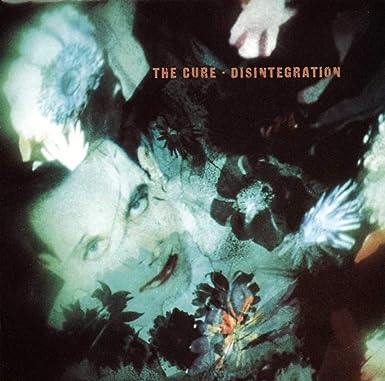
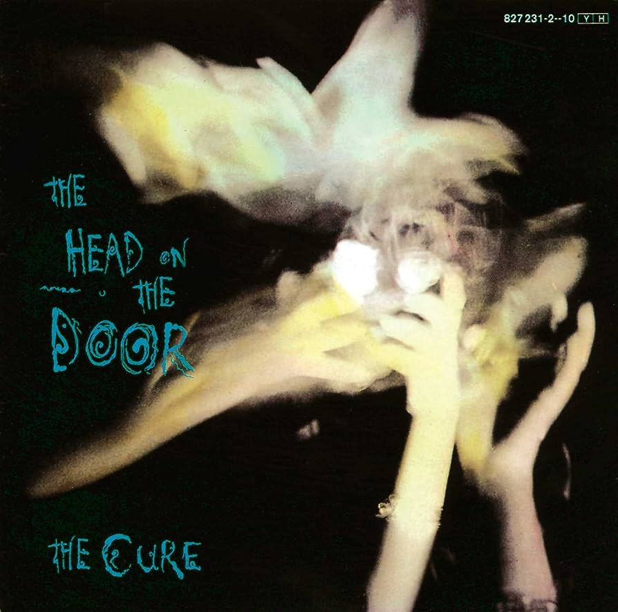
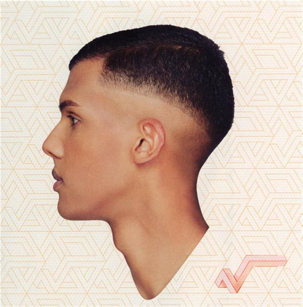
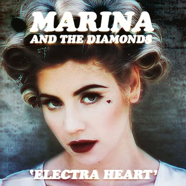
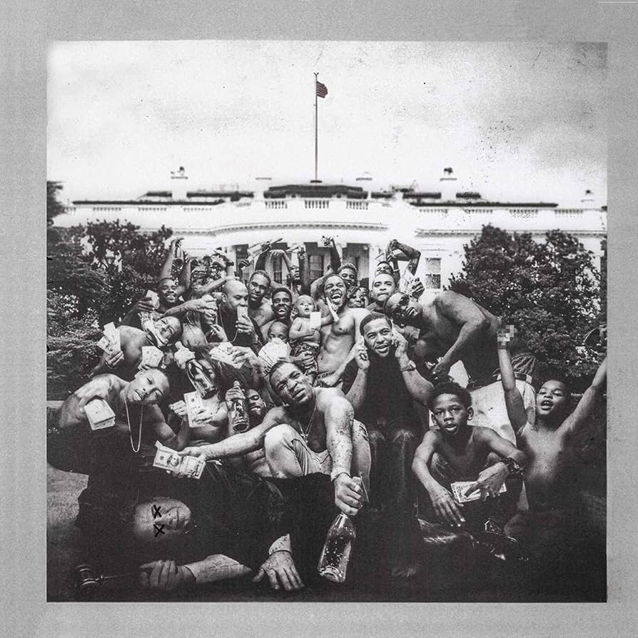


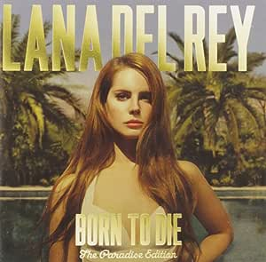
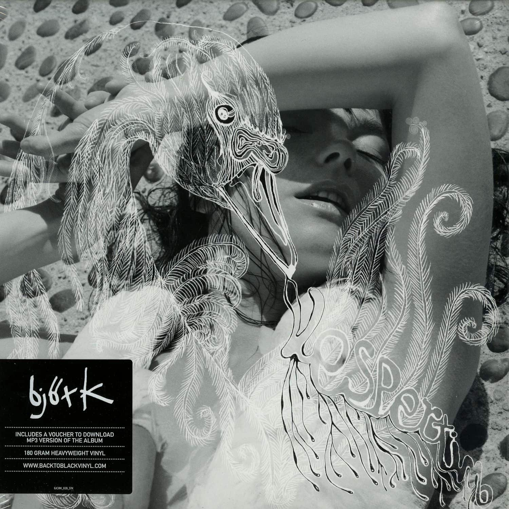

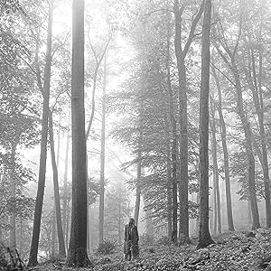

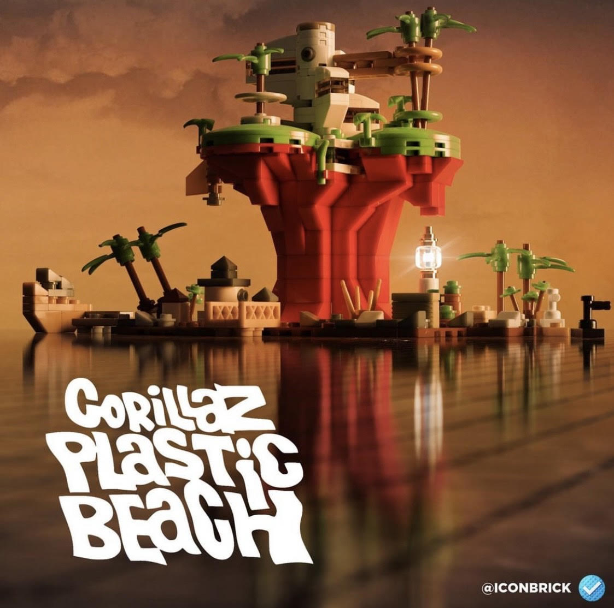
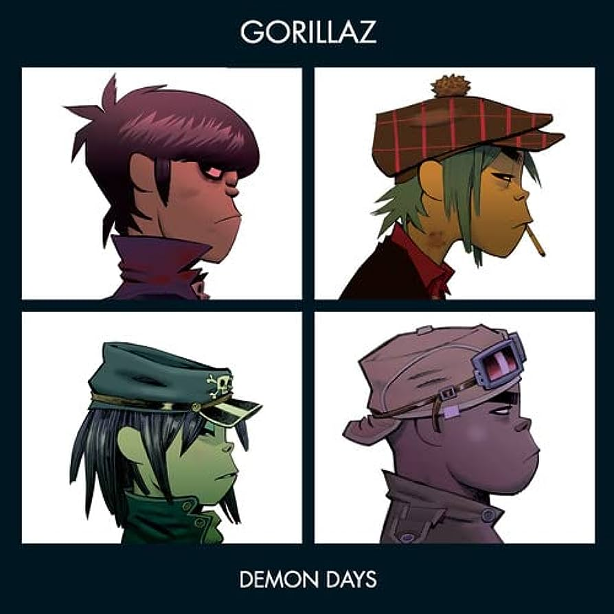
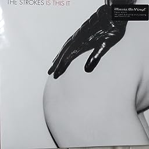
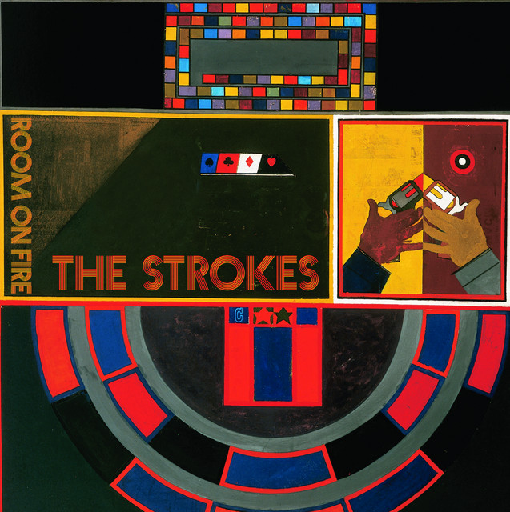
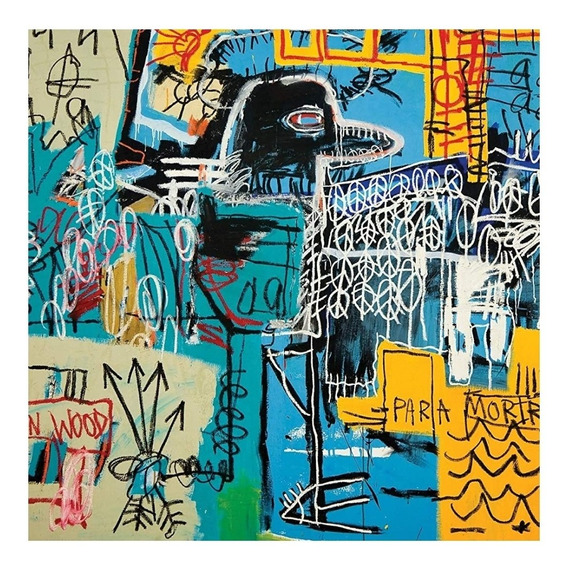
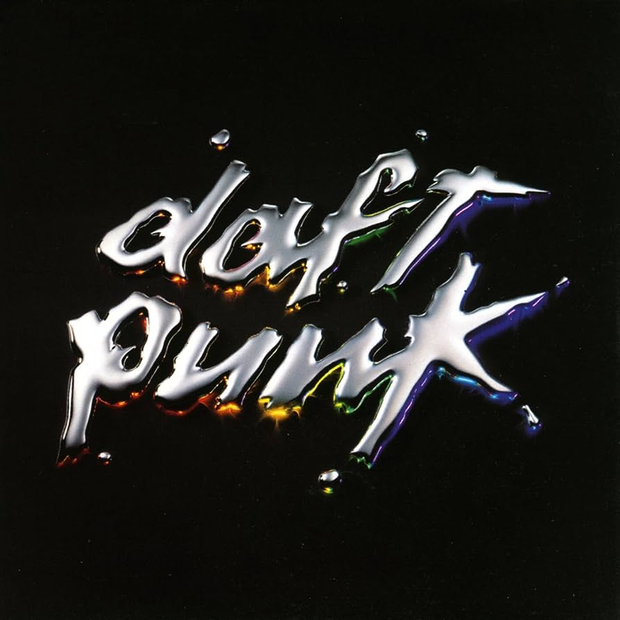

Sobre mí
Me llamo Viviana Vilchis y tengo 22 años. Soy de Monterrey, Nuevo León, México. Soy Ing. en Biotecnología y actualmente estoy aprendiendo sobre desarrollo web y programación.
El Mal Querer de Rosalía
Información sobre el disco...
"El Mal Querer", el segundo álbum de estudio de la artista española Rosalía, lanzado en 2018, es una innovadora mezcla de ritmos flamencos tradicionales y elementos modernos de pop, música urbana y electrónica. El álbum presenta una narrativa experimental de una relación amorosa tóxica, cada pista correspondiente a un capítulo diferente de la historia.
Tracklist:
- "Malamente" (Cap.1: Augurio) ★
- "Que no salga la luna" (Cap.2: Boda) ★
- "Pienso en tu mirá" (Cap.3: Celos) ★
- "De aquí no sales" (Cap.4: Disputa) ★
- "Reniego" (Cap.5: Lamento) ★
- "Preso" (Cap.6: Clausura)
- "Bagdad" (Cap.7: Liturgia) ★
- "Di mi nombre" (Cap.8: Éxtasis) ★
- "Nana" (Cap.9: Concepción)
- "Maldición" (Cap.10: Cordura) ★
- "A ningún hombre" (Cap.11: Poder) ★
Homogenic de Bjork
Información sobre el disco...
"Homogenic", tercer álbum de la islandesa Björk, se lanzó en septiembre de 1997. Distinto a sus anteriores trabajos, combina beats electrónicos con cuerdas, evocando a Islandia. Incluye sencillos como "Jóga" y "Bachelorette". Es considerado uno de los mejores álbumes de la historia.
Tracklist:
- Hunter ★
- Jóga ★
- Unravel
- Bachelorette ★
- All Neon Like
- 5 Years
- Immature
- Alarm Call ★
- Pluto ★
- All Is Full of Love ★
Caprisongs de FKA Twigs
Información sobre el disco...
"CAPRISONGS" es el primer mixtape de la cantante inglesa FKA Twigs, lanzado el 14 de enero de 2022. Marca una transición hacia un sonido más convencional, describiéndose como art pop visceral y avant-pop sin restricciones. Sus letras están influenciadas por R&B y hip hop, y sus beats por trap, drum'n'bass y dancehall.
Tracklist:
- ride the dragon ★
- honda featuring Pa Salieu ★
- meta angel ★
- tears in the club featuring The Weeknd ★
- oh my love ★
- pamplemousse ★
- caprisongs interlude featuring solo
- lightbeamers ★
- papi bones featuring shygirl ★
- which way featuring dystopia ★
- jealousy featuring rema ★
- careless featuring daniel caesar ★
- minds of men
- track girl interlude
- darjeeling featuring jorja smith and unknown ★
- christi interlude
- thank you song ★
MAGDALENE de FKA Twigs
Información sobre el disco...
"Magdalene" es el segundo álbum de la cantante inglesa FKA Twigs, lanzado el 8 de noviembre de 2019. En este, Twigs fusiona art pop electrónico con danza moderna y soul carnal. Aunque desafía géneros, recuerda a músicos como Björk y Kate Bush, incorporando elementos de pop, avant-garde, R&B, trap, hip hop, trip hop, alt-pop, punk rock, industrial, ópera, chamber pop y folk búlgaro.
Temas principales:
Tracklist:
- Thousand Eyes
- Home with You ★
- Sad Day ★
- Holy Terrain featuring Future ★
- Mary Magdalene ★
- Fallen Alien
- Mirrored Heart ★
- Daybed
- Cellophane ★
El Madrileño de C.Tangana

Información sobre el disco...
"El Madrileño" es el segundo álbum de estudio del rapero y cantautor español C. Tangana, lanzado el 26 de febrero de 2021 por Sony Music. Co-producido con Alizzz, Tangana experimenta con un sonido más orgánico y guitarrístico, alejándose del hip hop urbano anterior. Es un álbum colaborativo que rinde homenaje a sus raíces, con doce de catorce temas en colaboración con destacados artistas latinos de folk, rock y flamenco. El resultado es un mosaico de sus influencias adolescentes y la adopción de un nuevo alter ego que da nombre al álbum.
Tracklist:
- Demasiadas Mujeres ★
- Tú Me Dejaste de Querer ★
- Comerte Entera ★
- Nunca Estoy ★
- Párteme La Cara
- Ingobernable ★
- Nominao
- Un Veneno (G-Mix) ★
- Te Olvidaste
- Muriendo De Envidia
- CAMBIA! ★
- Cuándo Olvidaré ★
- Los Tontos ★
- Hong Kong